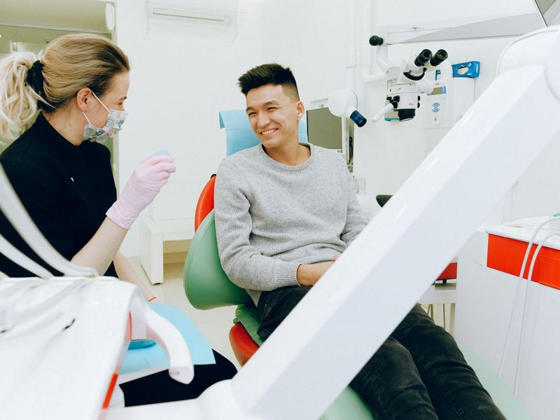
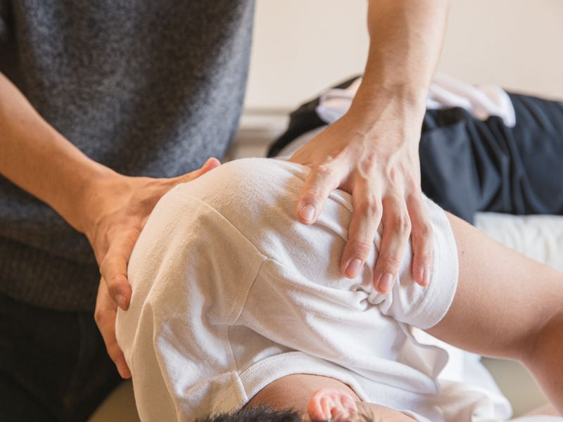

Modernste physiotherapeutische Methoden fur Ihre Gesundheit und Mobilitat.
Unsere Leistungen
Von manueller Therapie uber Stosswellentherapie bis zur Kiefergelenkbehandlung – wir bieten ein breites Spektrum moderner physiotherapeutischer Verfahren.
← Zurück zur StartseiteGezielte Handgriff- und Mobilisationstechniken fur Gelenke und Muskeln.
Mehr erfahren →Wiederherstellung der Bewegungs- und Funktionfahigkeit des Korpers.
Mehr erfahren →Pravention und Linderung von Ruckenschmerzen durch gezielte Ubungen.
Mehr erfahren →Sanfte Korrektur des Kopfgelenks bei Kopfschmerzen und Schwindel.
Mehr erfahren →Klebebandagen zur Entlastung von Muskeln und Gelenken.
Mehr erfahren →
Manuelle Therapie bei CMD und Kieferbeschwerden.
Mehr erfahren →
Effektive Behandlung von Muskel- und Sehnenbeschwerden mit Druckwellen.
Mehr erfahren →Bei der manuellen Therapie werden Funktionsstorungen des Bewegungsapparates untersucht und behandelt. Sie ist gepragt von gezielten Handgriff- und Mobilisationstechniken, durch die Schmerzen gelindert und Bewegungsstorungen beseitigt werden.
Physiotherapeuten mobilisieren mit sanften Techniken blockierte Gelenke und stabilisieren instabile Gelenke mit individuellen Ubungen. Die Wiederherstellung des Zusammenspiels zwischen Gelenken, Muskeln und Nerven ist das Ziel.
Termin vereinbaren →Die Krankengymnastik zielt darauf ab, die Bewegungs- und Funktionsfahigkeit des Korpers wiederherzustellen, zu verbessern oder zu erhalten. Patienten lernen, wie Fehlhaltungen fruhzeitig erkannt und mit Ubungen im Alltag selbst behandelt werden konnen.
Ein weiterer positiver Effekt ist die verbesserte Durchblutung und ein besserer Stoffwechsel im betroffenen Gewebe.
Termin vereinbaren →Die Ruckenschule ist spezialisiert auf die Pravention und Linderung von Ruckenschmerzen. Im Vordergrund stehen Beweglichkeit, Kraftigung der Ruckenmuskulatur und Entspannungsubungen.
Schon einfache Ubungen konnen in jeder Altersgruppe die Lebensqualitat nachhaltig verbessern. Die Krankenkassen ubernehmen bis zu 80% der Kursgebuhr.
Termin vereinbaren →Der Atlaswirbel ist ein wichtiges Element des Kopfgelenks, das im Laufe der Zeit eingeschrankt werden kann. Ursachen konnen Kopfschmerzen, Schwindel und Durchblutungsstorungen sein. Mit manuellen Therapietechniken werden Blockaden und Bewegungseinschrankungen gelost.
Termin vereinbaren →Beim Kinesio Taping werden Klebebandagen an betroffenen Korperstellen fixiert. Sie werden bei Verstauchungen, Prellungen und Verspannungen eingesetzt, um die jeweilige Korperregion zu entlasten und den Heilungsprozess zu optimieren.
Termin vereinbaren →Bei Craniomandibulärer Dysfunktion (CMD) oder Kieferbeschwerden bieten wir manuelle Therapie mit Traktions- und Entlastungstechniken am Kiefergelenk an. Auch eine Triggerpunkttherapie ist hier eine Moglichkeit.
Termin vereinbaren →Die radiale Stosswellentherapie nutzt mechanische Druckwellen, die gezielt auf das Gewebe einwirken. Sie fordern den Zellstoffwechsel, lindern Schmerzen und unterstutzen die Regeneration.
Besonders geeignet ist die Therapie bei Schulterbeschwerden, Tennisellbogen, Fersensporn und muskularen Triggerpunkten.
Termin vereinbaren →Beratung & Termin
Rufen Sie uns an oder schreiben Sie uns – wir beraten Sie gerne, welche Behandlung die richtige fur Sie ist.
030 / 232 903 57 Termin anfragen →